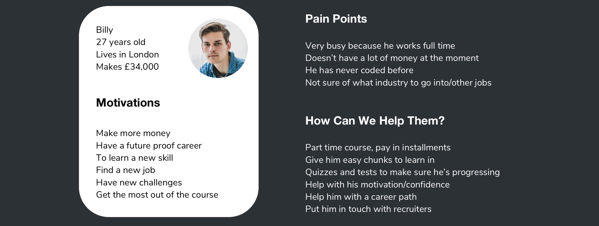

The Jump
The Jump is a new digital school that helps students make the jump to an industry-ready web developer job.
My brief was to make a personalised portal for The Jump. They had a lot of different ideas and features that they wanted. These included: viewing courses available to buy, showing courses they had completed, suggesting new courses they may wish to learn, letting students provide feedback on the course and much more. My first step was to conduct some User Research. Because I felt that the brief was very broad, I decided to keep my research broad as to try and not miss any insights.

User Research
The form asked participants about their experience on courses they have taken. My first insight was from the question: What was your reason for joining the course? I saw that there was no clear trend and everyone's reasoning was different. My second insight was from the question: What was most important to you? Most people answered ‘quality of teaching material’ (which I had expected) and ‘knowing what I could do next.’ For ‘knowing what I could do next’, this was a point raised by the co-founder of The Jump during our inital talks and is definitely something they want to pursue in the future. My final insight was from the question: What do you feel the course was lacking? For this, the highest answer was ‘steps to take after the course’ which I felt was reflective of ‘knowing what I could do next’ but could also lead into how good the communication was with the company that you’re learning with.

From these surveys, I reached out to 4 people to talk more in-depth about their answers. Again, I tried to keep the questions open and reached out to a variety of people, not just those who were learning something tech based. I compiled my research and found 4 key insights. 1. Why they were doing the course. 2. How feedback was given. 3. The resources they had. 4. What practical element there was on the course. The feedback I received helped me to focus down the brief I was given and I decided to focus on how the resources were organised and how the students would communicate with their teacher.
Competitors
Next, I looked at competitors. Because I couldn’t find any direct competitors, I focused on indirect competitors and looked at three different areas: how people communicate with each other, how they store documents and if there was anything negative about them.
Google Classroom
Communication with others? "Facebook" stream for the homepage but does have communication on different assignments as well.
Documents? Can organise into topics and upload on there. Make announcements and assignments with due dates and add those due dates to Google Calendar. Can add documents to Google Drive as well.
Negatives? No progress to be shown.
Slack
Communication with others? Lots of different channels to use and personal messaging as well. Even an option to call a person.
Documents? Can upload but very static no way to collaborate on them.
Negatives? Documentation and slack can be hard if there are a lot of people on it and the channels aren’t used correctly.
University VLE
Communication with others? None, usually just lecturers spitting out content. There is a calendar with upcoming events, don’t think that is really used on it.
Documents? Lots and well organised into relevant sections.
Negatives? Have to email questions over, not through VLE, can’t communicate with other students, but more of a resource platform.
Google Drive
Communication with others? None, only through the documents.
Documents? Very rich. Lots of different ways to upload files and interact with them.
Negatives? Just documentation, no way to have conversations, no alerts, no calendar.
Persona
After I finished my initial research. I created a persona to focus in on the types of users that I would be designing for. From all of the data I collected and talks that I had, Billy was the persona that I came up. He represents the thoughts and feelings that came up during my research.
Experience Map
Next, I used an experience map to help highlight pain points along an as-is journey for a student asking a question to a teacher through Slack. I found this really helped to highlight where I had opportunities to improve in my design. A focus on the student and how they communicated with their teacher was something I was able to pick up from the experience map.

Initial Wireframes
With my initial wireframes, I found this the most difficult to do because I was working on a brand new project with no previous designs to work upon. I learnt that just starting the process and iterating on ideas was better than thinking about an optimal design first. I went from homework on individual pages to a Facebook feed style and went with a more week to week based course with a messenger feature to talk to the teacher.

Prototype
Once I was happy with my low fidelity prototypes, I added colour, typography and images to make my high fidelity prototypes in Invision. For the colours, I kept it basic with the white and dark grey and used accents of orange, blue, green and yellow that mirror programming software.

Roadmap
Because this is the first iteration of this design, I think the first thing would to carry on with user testing. Seeing if the messenger feature is used and if it would increase engagement with teachers and result in more positive reviews. I would then like to work on a mobile version of the website, possibly focusing more on the chat function since I think more people will be viewing the resources online. There were also a lot of features that we discussed, like calendar reminders, learning paths and more, that would be interesting to implement as well.

Experience Haus
This project was in conjunction with the Experience Haus Product Design Course, where we work with a real client whilst learning.